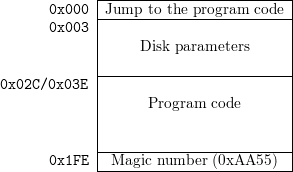
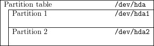
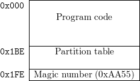
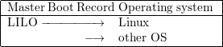
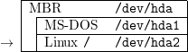
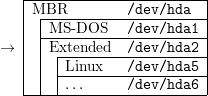
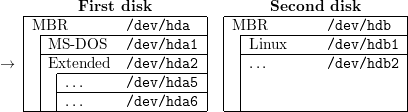
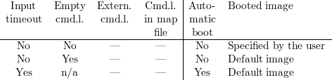

LILO
Generic boot loader for Linux
Version 21.5
User’s guide
Werner Almesberger
John R. Coffman
(reconstructed by Joachim Wiedorn)
July 17, 2000
Contents
This document has only been partially updated and does reflect the status of Linux (until
2.2.16) and of LILO (until 21.5) in the year 2000.
1 Overview
LILO is a versatile boot loader for Linux. It does not depend on a specific file system, can boot Linux kernel
images from floppy disks and from hard disks and can even act as a “boot manager” for other operating
systems.
One of up to sixteen different images can be selected at boot time. Various parameters, such as the root
device, can be set independently for each kernel. LILO can even be used as the master boot
record.
This document introduces the basics of disk organization and booting, continues with an overview of
common boot techniques and finally describes installation and use of LILO in greater detail. The
troubleshooting section at the end describes diagnostic messages and contains suggestions for most problems
that have been observed in the past.
Please read at least the sections about installation and configuration if you’re already using an older version
of LILO. This distribution is accompanied by a file named INCOMPAT that describes further incompatibilities
to older versions.
For the impatient: there is a quick-installation script to create a simple but quite usable installation. See
section 5.1.2 for details.
1.1 Easy rules
But wait … here are a few easy rules that will help you to avoid most problems people experience with
LILO:
- Don’t panic. If something doesn’t work, try to find out what is wrong, try to verify your
assumption and only then attempt to fix it.
- Read the documentation. Especially if what the system does doesn’t correspond to what you
think it should do.
- Make sure you have an emergency boot disk, that you know how to use it, and that it is always
kept up to date.
- Run /sbin/lilo whenever the kernel or any part of LILO, including its configuration file,
has changed. When in doubt, run it. You can’t run /sbin/lilo too many times.
- If performing a destructive upgrade and/or erasing your Linux partitions, de-install
LILO before that if using it as the MBR.
- Don’t trust setup scripts. Always verify the /etc/lilo.conf they create before booting.
- If using a big disk, be prepared for inconveniences: you may have to use the linear option.
1.2 System overview
LILO is a collection of several programs and other files:
-
The map installer
- is the program you run under Linux to put all files belonging to LILO at the
appropriate places and to record information about the location of data needed at boot time.
This program normally resides in /sbin/lilo. It has to be run to refresh that information
whenever any part of the system that LILO knows about changes, e.g. after installing a new
kernel.
-
Various files
- contain data LILO needs at boot time, e.g. the boot loader. Those files normally reside
in /boot. The most important files are the boot loader (see below) and the map file (/boot/map),
where the map installer records the location of the kernel(s).
Another important file is the configuration file, which is normally called /etc/lilo.conf
-
The boot loader
- is the part of LILO that is loaded by the BIOS and that loads kernels or the
boot sectors of other operating systems. It also provides a simple command-line interface to
interactively select the item to boot and to add boot options.
LILO primarily accesses the following parts of the system:
-
The root file system partition
- is important for two reasons: first, LILO sometimes has to tell
the kernel where to look for it. Second, it is frequently a convenient place for many other items
LILO uses, such as the boot sector, the /boot directory, and the kernels.
-
The boot sector
- contains the first part of LILO’s boot loader. It loads the much larger second-stage
loader. Both loaders are typically stored in the file /boot/boot.b
-
The kernel
- is loaded and started by the boot loader. Kernels typically reside in the root directory
or in /boot.
Note that many of the files LILO needs at boot time have to be accessible with the BIOS. This creates
certain restrictions, see section 2.3.1.
2 Introduction
The following sections describe how PCs boot in general and what has to be known when booting Linux
and using LILO in particular.
2.1 Disk organization
When designing a boot concept, it is important to understand some of the subtleties of how
PCs typically organize disks. The most simple case are floppy disks. They consist of a boot
sector, some administrative data (FAT or super block, etc.) and the data area. Because that
administrative data is irrelevant as far as booting is concerned, it is regarded as part of the data area for
simplicity.
The entire disk appears as one device (e.g. /dev/fd0) on Linux.
The MS-DOS boot sector has the following structure:

LILO uses a similar boot sector, but it does not contain the disk parameters part. This is no problem for
Minix, Ext2 or similar file systems, because they don’t look at the boot sector, but putting a LILO boot
sector on an MS-DOS file system would make it inaccessible for MS-DOS.
Hard disks are organized in a more complex way than floppy disks. They contain several data areas called
partitions. Up to four so-called primary partitions can exist on an MS-DOS hard disk. If more partitions are
needed, one primary partition is used as an extended partition that contains several logical
partitions.
The first sector of each hard disk contains a partition table, and an extended partition and each logical
partition contains a partition table too.

The entire disk can be accessed as /dev/hda, /dev/hdb, /dev/sda, etc. The primary partitions are
/dev/hda1 … /dev/hda4.
![|------------------------------------------|
|Partition-table------------------/dev/hda---|
| |Partition 1 /dev/hda1 |
| |----------------------------------------|
| |Partition 2 /dev/hda2 |
| | |
| |Extended--partition------------/dev/hda3--|
| | |--------------------------------------|
| | |Extended--partition-table---------------|
| | |Partition 3 /dev/hda5 |
| | |--------------------------------------|
| | |Extended--partition-table---------------|
| | |Partition 4 /dev/hda6 |
| | | |
--------------------------------------------](user_21-53x.png)
This hard disk has two primary partitions and an extended partition that contains two logical partitions.
They are accessed as /dev/hda5 …
Note that the partition tables of logical partitions are not accessible as the first blocks of some devices,
while the main partition table, all boot sectors and the partition tables of extended partitions
are.
Partition tables are stored in partition boot sectors. Normally, only the partition boot sector of the entire
disk is used as a boot sector. It is also frequently called the master boot record (MBR). Its structure is as
follows:

The LILO boot sector is designed to be usable as a partition boot sector. (I.e. there is room for the
partition table.) Therefore, the LILO boot sector can be stored at the following locations:
- boot sector of a Linux floppy disk. (/dev/fd0, …)
- MBR of the first hard disk. (/dev/hda, /dev/sda, …)
- boot sector of a primary Linux file system partition on the first hard disk. (/dev/hda1, …)
- partition boot sector of an extended partition on the first hard disk. (/dev/hda1, …)
It can’t be stored at any of the following locations:
- boot sector of a non-Linux floppy disk or primary partition.
- a Linux swap partition.
- boot sector of a logical partition in an extended partition.
- on the second hard disk. (Unless for backup installations, if the current first disk will be removed
or disabled, or if some other boot loader is used, that is capable of loading boot sectors from
other drives.)
Although LILO tries to detect attempts to put its boot sector at an invalid location, you should not rely on
that.
2.2 Booting basics
When booting from a floppy disk, the first sector of the disk, the so-called boot sector, is loaded. That boot
sector contains a small program that loads the respective operating system. MS-DOS boot sectors also
contain a data area, where disk and file system parameters (cluster size, number of sectors, number of
heads, etc.) are stored.
When booting from a hard disk, the very first sector of that disk, the so-called master boot
record (MBR) is loaded. This sector contains a loader program and the partition table of the
disk. The loader program usually loads the boot sector, as if the system was booting from a
floppy.
Note that there is no functional difference between the MBR and the boot sector other than that the MBR
contains the partition information but doesn’t contain any file system-specific information (e.g. MS-DOS
disk parameters).
The first 446 (0x1BE) bytes of the MBR are used by the loader program. They are followed by the partition
table, with a length of 64 (0x40) bytes. The last two bytes contain a magic number that is sometimes used
to verify that a given sector really is a boot sector.
There is a large number of possible boot configurations. The most common ones are described in the
following sections.
2.2.1 MS-DOS alone
This is what usually happens when MS-DOS boots from a hard disk: the DOS-MBR determines the active
partition and loads the MS-DOS boot sector. This boot sector loads MS-DOS and finally passes control to
COMMAND.COM. (This is greatly simplified.)
2.2.2 LOADLIN
A typical LOADLIN setup: everything happens like when booting MS-DOS, but in CONFIG.SYS or
AUTOEXEC.BAT, LOADLIN is invoked. Typically, a program like BOOT.SYS is used to choose among
configuration sections in CONFIG.SYS and AUTOEXEC.BAT. This approach has the pleasant property that no
boot sectors have to be altered.
Please refer to the documentation accompanying the LOADLIN package for installation instructions and
further details.
2.2.3 LILO started by DOS-MBR
This is a “safe” LILO setup: LILO is booted by the DOS-MBR. No other boot sectors have to be touched.
If the other OS (or one of them, if there are several other operating systems being used) should
be booted without using LILO, the other partition has to be marked “active” with fdisk or
activate.
Installation:
- install LILO with its boot sector on the Linux partition.
- use fdisk or activate to make that partition active.
- reboot.
Deinstallation:
- make a different partition active.
- install whatever should replace LILO and/or Linux.
2.2.4 Several alternate branches
An extended form of the above setup: the MBR is not changed and both branches can either boot Linux or
MS-DOS. (LILO could also boot other operating systems.)
2.2.5 LILO started by BOOTACTV
Here, the MBR is replaced by BOOTACTV (or any other interactive boot partition
selector) and the choice between Linux and the other operating system(s) can be made
at boot time. This approach should be used if LILO fails to boot the other operating
system(s).
Installation:
- boot Linux.
- make a backup copy of your MBR on a floppy disk, e.g.
dd if=/dev/hda of=/fd/MBR bs=512 count=1
- install LILO with the boot sector on the Linux partition.
- install BOOTACTV as the MBR, e.g.
dd if=bootactv.bin of=/dev/hda bs=446 count=1
- reboot.
Deinstallation:
- boot Linux.
- restore the old MBR, e.g.
dd if=/MBR of=/dev/hda bs=446 count=1
or FDISK /MBR under MS-DOS.
If replacing the MBR appears undesirable and if a second Linux partition exists (e.g. /usr,
not a swap partition), BOOTACTV can be merged with the partition table and stored as the
“boot sector” of that partition. Then, the partition can be marked active to be booted by the
DOS-MBR.
Example:
# dd if=/dev/hda of=/dev/hda3 bs=512 count=1
# dd if=bootactv.bin of=/dev/hda3 bs=446 count=1
WARNING: Whenever the disk is re-partitioned, the merged boot sector on that “spare” Linux partition
has to be updated too.
2.2.6 LILO alone

LILO can also take over the entire boot procedure. If installed as the MBR, LILO is responsible for either
booting Linux or any other OS. This approach has the disadvantage, that the old MBR is overwritten and
has to be restored (either from a backup copy, with FDISK /MBR on recent versions of MS-DOS or
by overwriting it with something like BOOTACTV) if Linux should ever be removed from the
system.
You should verify that LILO is able to boot your other operating system(s) before relying on this
method.
Installation:
- boot Linux.
- make a backup copy of your MBR on a floppy disk, e.g.
dd if=/dev/hda of=/fd/MBR bs=512 count=1
- install LILO with its boot sector as the MBR.
- reboot.
Deinstallation:
- boot Linux.
- restore the old MBR, e.g.
dd if=/fd/MBR of=/dev/hda bs=446 count=1
If you’ve installed LILO as the master boot record, you have to explicitly specify the boot sector
(configuration variable boot=…) when updating the map. Otherwise, it will try to use the boot sector of
your current root partition, which will usually work, but it will probably leave your system
unbootable.
2.2.7 Names
The following names have been used to describe boot sectors or parts of operating systems:
-
“DOS-MBR”
- is the original MS-DOS MBR. It scans the partition table for a partition that is
marked “active” and loads the boot sector of that partition. Programs like MS-DOS’ FDISK,
Linux fdisk or activate (accompanies LILO) can change the active marker in the partition table.
-
“MS-DOS”
- denotes the MS-DOS boot sector that loads the other parts of the system (IO.SYS,
etc.).
-
“COMMAND.COM”
- is the standard command interpreter of MS-DOS.
-
“LOADLIN”
- is a program that loads a Linux kernel image from an MS-DOS partition into memory
and executes it. It is usually invoked from CONFIG.SYS and is used in combination with a
CONFIG.SYS configuration switcher, like BOOT.SYS.
-
“LILO”
- can either load a Linux kernel or the boot sector of any other operating system. It has a first
stage boot sector that loads the remaining parts of LILO from various locations.
-
“BOOTACTV”
- permits interactive selection of the partition from which the boot sector should
be read. If no key is pressed within a given interval, the partition marked active is booted.
BOOTACTV is included in the pfdisk package. There are also several similar programs, like
PBOOT and OS-BS.
2.3 Choosing the “right” boot concept
Although LILO can be installed in many different ways, the choice is usually limited by the present
setup and therefore, typically only a small number of configurations which fit naturally into an
existing system remains. The following sections describe various possible cases. See also section
2.3.1.
The configuration file /etc/lilo.conf for the examples could look like this:
boot = /dev/hda2
compact
image = /vmlinuz
image = /vmlinuz.old
other = /dev/hda1
table = /dev/hda
label = msdos
It installs a Linux kernel image (/vmlinuz), an alternate Linux kernel image (/vmlinuz.old) and a chain
loader to boot MS-DOS from /dev/hda1. The option compact on the second line instructs the map installer
to optimize loading.
In all examples, the names of the IDE-type hard disk devices (/dev/hda…) are used. Everything applies to
other disk types (e.g. SCSI disks; /dev/sda…) too.
2.3.1 BIOS restrictions
Nowadays, an increasing number of systems is equipped with comparably large disks or even with
multiple disks. At the time the disk interface of the standard PC BIOS has been designed (about
16 years ago), such configurations were apparently considered to be too unlikely to be worth
supporting.
The most common BIOS restrictions that affect LILO are the limitation to two hard disks and the inability
to access more than 1024 cylinders per disk. LILO can detect both conditions, but in order to work around
the underlying problems, manual intervention is necessary.
The drive limit does not exist in every BIOS. Some modern motherboards and disk controllers
are equipped with a BIOS that supports more (typically four) disk drives. When attempting
to access the third, fourth, etc. drive, LILO prints a warning message but continues. Unless
the BIOS really supports more than two drives, the system will not be able to boot in that
case.
The cylinder limit is a very common problem with IDE disks. There, the number of cylinders may already
exceed 1024 if the drive has a capacity of more than 504 MB. Many SCSI driver BIOSes present the disk
geometry in a way that makes the limit occur near 1 GB. Modern disk controllers may even push
the limit up to about 8 GB. All cylinders beyond the 1024th are inaccessible for the BIOS.
LILO detects this problem and aborts the installation (unless the linear option is used, see section
4.2.2).
Note that large partitions that only partially extend into the “forbidden zone” are still in jeopardy even
if they appear to work at first, because the file system does not know about the restrictions
and may allocate disk space from the area beyond the 1024th cylinder when installing new
kernels. LILO therefore prints a warning message but continues as long as no imminent danger
exists.
There are four approaches of how such problems can be solved:
- use of a different partition which is on an accessible disk and which does not exceed the 1024
cylinder limit. If there is only a DOS partition which fulfills all the criteria, that partition can
be used to store the relevant files. (See section 2.3.8.)
- rearranging partitions and disks. This is typically a destructive operation, so extra care should
be taken to make good backups.
- if the system is running DOS or Windows 95, LOADLIN can be used instead of LILO.
- if all else fails, installation of a more capable BIOS, a different controller or a different disk
configuration.
LILO depends on the BIOS to load the following items:
- /boot/boot.b
- /boot/map (created when running /sbin/lilo)
- all kernels
- the boot sectors of all other operating systems it boots
- the startup message, if one has been defined
Normally, this implies that the Linux root file system should be in the “safe” area. However, it is already
sufficient to put all kernels into /boot and to either mount a “good” partition on /boot or to let /boot be a
symbolic link pointing to or into such a partition.
See also /usr/src/linux/Documentation/ide.txt (or /usr/src/linux/drivers/block/README.ide in
older kernels) for a detailed description of problems with large disks.
2.3.2 One disk, Linux on a primary partition
If at least one primary partition of the first hard disk is used as a Linux file system (/, /usr, etc. but not as
a swap partition), the LILO boot sector should be stored on that partition and it should be booted by the
original master boot record or by a program like BOOTACTV.

In this example, the boot variable could be omitted, because the boot sector is on the root
partition.
2.3.3 One disk, Linux on a logical partition
If no primary partition is available for Linux, but at least one logical partition of an extended partition on
the first hard disk contains a Linux file system, the LILO boot sector should be stored in the partition
sector of the extended partition and it should be booted by the original master boot record or by a program
like BOOTACTV.

Because many disk partitioning programs refuse to make an extended partition (in our example /dev/hda2)
active, you might have to use activate, which comes with the LILO distribution.
OS/2 BootManager should be able to boot LILO boot sectors from logical partitions. The installation on
the extended partition itself is not necessary in this case.
2.3.4 Two disks, Linux (at least partially) on the first disk
This case is equivalent to the configurations where only one disk is in the system. The Linux boot sector
resides on the first hard disk and the second disk is used later in the boot process.
Only the location of the boot sector matters – everything else (/boot/boot.b, /boot/map, the root file
system, a swap partition, other Linux file systems, etc.) can be located anywhere on the second disk,
provided that the constraints described in section 2.3.1 are met.
2.3.5 Two disks, Linux on second disk, first disk has an extended partition
If there is no Linux partition on the first disk, but there is an extended partition, the LILO boot sector can
be stored in the partition sector of the extended partition and it should be booted by the original master
boot record or by a program like BOOTACTV.

The program activate, that accompanies LILO, may have to be used to set the active marker on an extended
partition, because MS-DOS’ FDISK and some older version of Linux fdisk refuse to do that. (Which is
generally a good idea.)
2.3.6 Two disks, Linux on second disk, first disk has no extended partition
If there is neither a Linux partition nor an extended partition on the first disk, then there’s only one place
left, where a LILO boot sector could be stored: the master boot record.
In this configuration, LILO is responsible for booting all other operating systems too.

You should back up your old MBR before installing LILO and verify that LILO is able to boot your other
operating system(s) before relying on this approach.
The line boot = /dev/hda2 in /etc/lilo.conf would have to be changed to boot = /dev/hda in this
example.
2.3.7 More than two disks
On systems with more than two disks, typically only the first two can be accessed. The configuration choices
are therefore the same as with two disks.
When attempting to access one of the extra disks, LILO displays a warning message (Warning: BIOS
drive 0xnumber may not be accessible) but does not abort. This is done in order to allow the lucky
few whose BIOS (or controller-BIOS) does support more than two drives to make use of this feature. By all
others, this warning should be considered a fatal error.
Note that the two disks restriction is only imposed by the BIOS. Linux normally has no problems using all
disks once it is booted.
2.3.8 /boot on a DOS partition
Recent kernels support all the functions LILO needs to map files also on MS-DOS (or UMSDOS) file
systems. Since DOS partitions tend to occupy exactly the places where BIOS restrictions (see section 2.3.1)
are invisible, they’re an ideal location for /boot if the native Linux file systems can’t be used because of
BIOS problems.
In order to accomplish this, the DOS partition is mounted read-write, a directory (e.g. /dos/linux) is
created, all files from /boot are moved to that directory, /boot is replaced by a symbolic link to it, the
kernels are also moved to the new directory, their new location is recorded in /etc/lilo.conf, and finally
/sbin/lilo is run.
From then on, new kernels must always be copied into that directory on the DOS partition
before running /sbin/lilo, e.g. when recompiling a kernel, the standard procedure changes
from
# make zlilo
to
# make zImage
# mv /dos/linux/vmlinuz /dos/linux/vmlinuz.old
# mv arch/i386/boot/zImage /dos/linux/vmlinuz
# /sbin/lilo
WARNING: De-fragmenting such a DOS partition is likely to make Linux or even the whole
system unbootable. Therefore, the DOS partition should either not be de-fragmented, or a Linux
boot disk should be prepared (and tested) to bring up Linux and to run /sbin/lilo after the
de-fragmentation.
3 The boot prompt
Immediately after it’s loaded, LILO checks whether one of the following is happening:
- any of the [Shift], [Control] or [Alt] keys is pressed.
- [CapsLock] or [ScrollLock] is set.
If this is the case, LILO displays the boot: prompt and waits for the name of a boot
image (i.e. Linux kernel or other operating system). Otherwise, it boots the default boot
image
or – if a delay has been specified – waits for one of the listed activities until that amount of time has
passed.
At the boot prompt, the name of the image to boot can be entered. Typing errors can be corrected with
[BackSpace], [Delete], [Ctrl U] and [Ctrl X]. A list of known images can be obtained by pressing [?] or
[Tab].
If [Enter] is pressed and no file name has been entered, the default image is booted.
3.1 Boot command-line options
LILO is also able to pass command-line options to the kernel. Command-line options are words that follow
the name of the boot image and that are separated by spaces.
Example:
boot: linux single root=200
This document only gives an overview of boot options. Please consult Paul Gortmaker’s BootPrompt-HOWTO
for a more complete and more up to date list. You can get it from
ftp://sunsite.unc.edu/pub/Linux/docs/HOWTO/BootPrompt-HOWTO.gz
or from one of the many mirror sites.
3.1.1 Standard options
Recent kernels recognize a large number of options, among them are debug, no387, no-hlt, ramdisk=size,
reserve=base,size,…, root=device, ro, and rw. All current init programs also recognize the option single.
The options lock and vga are processed by the boot loader itself. Boot command-line options are always
case-sensitive.
single boots the system in single-user mode. This bypasses most system initialization procedures and
directly starts a root shell on the console. Multi-user mode can typically be entered by exiting the
single-user shell or by rebooting.
root=device changes the root device. This overrides settings that may have been made in the
boot image and on the LILO command line. device is either the hexadecimal device number
or the full path name of
the device, e.g. /dev/hda3.
reserve=base,size,… reserves IO port regions. This can be used to prevent device drivers from auto-probing
addresses where other devices are located, which get confused by the probing.
ro instructs the kernel to mount the root file system read-only. rw mounts it read-write. If neither ro nor rw
is specified, the setting from the boot image is used.
no-hlt avoids executing a HLT instructions whenever the system is idle. HLT normally significantly reduces
power consumption and therefore also heat dissipation of the CPU, but may not work properly with some
clone CPUs. no387 disables using the hardware FPU even if one is present.
debug enables more verbose console logging.
Recent kernels also accept the options init=name and noinitrd. init specifies the name of the init
program to execute. Therefore, if single mode cannot be entered because init is mis-configured, one may still
be able to reach a shell using init=/bin/sh. noinitrd disables automatic loading of the initial RAM disk.
Instead, its content is then available on /dev/initrd.
vga=mode alters the VGA mode set at startup. The values normal, extended, ask or a decimal number are
recognized. (See also page .)
kbd=code,… preloads a sequence of keystrokes in the BIOS keyboard buffer. The keystrokes have to be
entered as 16 bit hexadecimal numbers, with the upper byte containing the scan code and the lower byte
containing the ASCII code. Note that most programs only use the ASCII code, so the scan code can
frequently be omitted. Scan code tables can be found in many books on PC hardware. Note that scan codes
depend on the keyboard layout.
Finally, lock stores the current command-line as the default command-line, so that LILO boots the same
image with the same options (including lock) when invoked the next time.
3.1.2 Device-specific options
There is also a plethora of options to specify certain characteristics (e.g. IO and memory addresses) of
devices. Some common ones are ether, floppy, hd, bmouse, and sound. The usage of these options is
option=number,…. Please consult the corresponding FAQs and HOWTOs for details. For an overview of all
available options, consult the file init/main.c in the kernel source tree.
3.1.3 Other options
Options of the type variable=value which are neither standard options nor device-specific options, cause the
respective variables to be set in the environment passed to init. The case of the variable name is preserved,
i.e. it isn’t automatically converted to upper case.
Note that environment variables passed to init are typically available in system initialization scripts (e.g.
/etc/rc.local), but they’re not visible from ordinary login sessions, because the login program removes
them from the user’s environment.
3.1.4 Repeating options
The effect of repeating boot command-line options depends on the
options.
There are three possible behaviours:
Options that only enable or disable a certain functionality can be repeated any number of times. debug,
lock, no-hlt, and no387 fall into this category.
Other options change a global setting whenever they appear, so only the value or presence of the last option
matters. The antagonists ro and rw are such options. Also, ramdisk, root, and vga work this way.
Example: ro rw would mount the root file system read-write.
Finally, when reserve and many device-specific options are repeated, each occurrence has its own meaning,
e.g.
hd=… hd=… would configure two hard disks, and
reserve=0x300,8 reserve=0x5f0,16 would reserve the ranges 0x300 to 0x307 and 0x5f0 to 0x5ff (which is
equivalent to writing reserve=0x300,8,0x5f0,16).
3.1.5 Implicit options
LILO always passes the string BOOT_IMAGE=name to the kernel, where name is the name by which the
kernel is identified (e.g. the label). This variable can be used in /etc/rc to select a different behaviour,
depending on the kernel.
When booting automatically, i.e. without human intervention, the word auto is also passed
on the command line. This can be used by init to suppress interactive prompts in the boot
phase.
3.2 Boot image selection
The details of selecting the boot image are somewhat complicated. The following tables illustrate them.
First, if neither prompt is set nor a shift key is being pressed:
![|
Externally Command | Auto- Booted image
provided line in | matic
cmd. line17 map file18 |boot19
-----No----------No-----|--Yes---Default-image--------------- 17Externally provided command lines could be used to add front- ends to LILO. They would pass the respective 18This command line is set by invoking the map installer with the -R option, by using the boot command -line option
Yes — | Yes Specified by external command string to LILO, which would then interpret it like keyboard input. This feature is currently not used. lock, or if a fallback command line is set (with fallback). 19I.e. the keyword auto is a
|
| command line
No Yes | Yes Specified by command line
| in map file](user_21-520x.png)
If prompt is not set and a shift key is being pressed:

Finally, if the configuration variable prompt is set:

Note that LILO pauses for the amount of time specified in delay when at the end of a default command
line. The automatic boot can then be interrupted by pressing a modifier key ([Shift], [Ctrl],
etc.).
The default image is the first image in the map file or the image specified with the default
variable. However, after an unsuccessful boot attempt, the respective image becomes the default
image.
4 Map installer
The map installer program /sbin/lilo updates the boot sector and creates the map file. If the map
installer detects an error, it terminates immediately and does not touch the boot sector and the map
file.
Whenever the map installer updates a boot sector, the original boot sector is copied to
/boot/boot.number
where number is the hexadecimal device number. If such a file already exists, no backup copy is made.
Similarly, a file
/boot/part.number
is created if LILO modifies the partition table. (See page .)
4.1 Command-line options
The LILO map installer can be invoked in the following ways:
4.1.1 Show current installation
The currently mapped files are listed. With -v, also many parameters are shown.
/sbin/lilo [ -C config_file ] -q [ -m map_file ] [ -v … ]
-
-C config_file
-
Specifies the configuration file that is used by the map installer (see section 4.2). If -C is omitted,
/etc/lilo.conf is used.
-
-m map_file
-
Specifies an alternate map file. See also sections 4.1.7 and 4.2.2.
-
-q
-
Lists the currently mapped files.
-
-v …
-
Increase verbosity. See also sections 4.1.7 and 4.2.2.
4.1.2 Create or update map
A new map is created for the images described in the configuration file /etc/lilo.conf and they are
registered in the boot sector.
/sbin/lilo  -C config_file ] [ -b boot_device ] [ -c ] [ -l ] [ -i boot_sector ]
-C config_file ] [ -b boot_device ] [ -c ] [ -l ] [ -i boot_sector ]
[ -f disk_tab ] [ -m map_file ] [ -d delay ] [ -v … ] [ -t ] [ -s save_file |
-S save_file ] [ -P fix | -P ignore ] [ -r root_dir ]
-
-b boot<_device
-
Specifies the boot device. See also sections 4.1.7 and 4.2.2.
-
-c
-
Enables map compaction. See also sections 4.1.7 and 4.2.2.
-
-C config_file
-
Specifies an alternate configuration file. See also section 4.1.1.
-
-d delay
-
Sets the delay before LILO boots the default image. Note that the delay is specified in tenths
of a second. See also sections 4.1.7 and 4.2.2.
-
-D name
-
Specifies the default image. See also sections 4.1.7 and 4.2.2.
-
-f disk_tab
-
Specifies a disk parameter table file. See also sections 4.1.7 and 4.2.2.
-
-i boot_sector
-
Specifies an alternate boot file. See also sections 4.1.7 and 4.2.2.
-
-L
-
Enables lba32 sector addresses. See also sections 4.1.7 and 4.2.2.
-
-l
-
Enables linear sector addresses. See also sections 4.1.7 and 4.2.2.
-
-m map_file
-
Specifies an alternate map file. See also sections 4.1.7 and 4.2.2.
-
-P mode
-
Specifies how invalid partition table entries should be handled. See also sections 4.1.7 and 4.2.2.
-
-r root_directory
-
Chroots to the specified directory before doing anything else. This is useful when running the
map installer while the normal root file system is mounted somewhere else, e.g. when recovering
from an installation failure with a recovery disk. The -r option is implied if the environment
variable ROOT is set.
The current directory is changed to the new root directory, so using relative paths may not
work.
-
-s save_file
-
Specifies an alternate boot sector save file. See also sections 4.1.7 and 4.2.2.
-
-S save_file
-
Like -s, but overwrites old save files.
-
-t
-
Test only. This performs the entire installation procedure except replacing the map file, writing
the modified boot sector and fixing partition tables. This can be used in conjunction with the
-v option to verify that LILO will use sane values.
-
-v …
-
Increase verbosity. See also sections 4.1.7 and 4.2.2.
4.1.3 Change default command line
Changes LILO’s default command line. See also section 3.2.
/sbin/lilo [ -C config_file ] [ -m map_file ] -R [ word … ]
-
-C config_file
-
Specifies an alternate configuration file. See also section 4.1.1.
-
-m map_file
-
Specifies an alternate map file. See also sections 4.1.7 and 4.2.2.
-
-R word …
-
Stores the specified words in the map file. The boot loader uses those words as the default
command line when booting the next time. That command line is removed from the map file by
the boot loader by overwriting the sector immediately after reading it. The first word has to be
the name of a boot image. If -R is not followed by any words, the current default command line in
the map file is erased.
If the command line isn’t valid, the map installer issues an error message and returns a non-zero
exit code.
4.1.4 Kernel name translation
Determines the path of the kernel.
/sbin/lilo [ -C config_file ] -I name [ options ]
-
-C config_file
-
Specifies an alternate configuration file. See also section 4.1.1.
-
-I name [ options ]
-
Translates the specified label name to the path of the corresponding kernel image and prints that
path on standard output. This can be used to synchronize files that depend on the kernel (e.g.
the ps database). The image name can be obtained from the environment variable BOOT_IMAGE.
An error message is issued and a non-zero exit code is returned if no matching label name can
be found. The existence of the image file is verified if the option character v is added.
4.1.5 De-installation
Restores the boot sector that was used before the installation of LILO. Note that this option only works
properly if LILO’s directories (e.g. /boot) have not been touched since the first installation. See also section
5.3.
/sbin/lilo [ -C config_file ] [ -s save_file ] -u | -U [ boot_device ]
-
-C config_file
-
Specifies an alternate configuration file. See also section 4.1.1.
-
-s save_file
-
Specifies an alternate boot sector save file. See also sections 4.1.7 and 4.2.2.
-
-u [ device_name ]
-
Restores the backup copy of the specified boot sector. If no device is specified, the value of the
boot variable is used. If this one is also unavailable, LILO uses the current root device. The
name of the backup copy is derived from the device name. The -s option or the backup variable
can be used to override this. LILO validates the backup copy by checking a time stamp.
-
-U [ device_name ]
-
Like -u, but does not check the time stamp.
4.1.6 Print version number
/sbin/lilo -V
-
-V
-
Print the version number and exit.
4.1.7 Options corresponding to configuration variables
There are also many command-line options that correspond to configuration variables. See section 4.2.2 for
a description.

4.2 Configuration
The configuration information is stored in the file /etc/lilo.conf and consists of variable
assignments.
4.2.1 Syntax
The following syntax rules apply:
- flag variables consist of a single word and are followed by whitespace or the end of the file.
- string variables consist of the variable name, optional whitespace, an equal sign, optional
whitespace, the value and required whitespace, or the end of the file.
- a non-empty sequence of blanks, tabs, newlines and comments counts as whitespace.
- variable names are case-insensitive. Values are usually case-sensitive, but there are a few
exceptions. (See below.)
- tabs and newlines are special characters and may not be part of a variable name or a value.
The use of other control characters and non-ASCII characters is discouraged.
- blanks and equal signs may only be part of a variable name or a value if they are escaped by
a backslash or if the value is embedded in double quotes. An equal sign may not be the only
character in a name or value.
- an escaped tab is converted to an escaped blank. An escaped newline is removed from the input
stream. An escaped backslash (i.e. two backslashes) is converted to a backslash. Inside quoted
strings, only double quotes, backslashes, dollar signs, and newlines can be escaped.
- quoted strings can be continued over several lines by ending each incomplete line with a
backslash. A single space is inserted in the string for the line end and all spaces or tabs that
follow immediately on the next line.
- environment variables can be used by specifying them in the form $name or ${name}. Dollar
signs can be escaped.
- comments begin with a number sign and end with the next newline. All characters (including
backslashes) until the newline are ignored.
Example:
boot = $FD
install = $MNT/boot.b
map = $MNT/map
compact
read-only
append = "nfsroot=/home/linux-install/root \
nfsaddrs=128.178.156.28:128.178.156.24::255.255.255.0:lrcinst"
image = $MNT/zImage
4.2.2 Global options
/etc/lilo.conf begins with a possibly empty global options section. Many global options can also be
set from the command line, but storing permanent options in the configuration file is more
convenient.
The following global options are recognized:
-
backup=backup_file
- Copy the original boot sector to backup_file (which may also be a device, e.g.
/dev/null) instead of /boot/boot.number
-
boot=boot_device
- Sets the name of the device (e.g. a hard disk partition) that contains the boot
sector. If boot is omitted, the boot sector is read from (and possibly written to) the device that
is currently mounted as root.
-
change-rules
- Defines partition type numbers. See section 4.5.2 for details.
-
compact
- Tries to merge read requests for adjacent sectors into a single read request. This drastically
reduces load time and keeps the map smaller. Using compact is especially recommended when
booting from a floppy disk. compact may conflict with linear or lba32, see section 6.3.
-
default=name
- Uses the specified image as the default boot image. If default is omitted, the image
appearing first in the configuration file is used.
-
delay=tsecs
- Specifies the number of tenths of a second LILO should wait before booting the first
image. This is useful on systems that immediately boot from the hard disk after enabling the
keyboard. LILO doesn’t wait if delay is omitted or if delay is set to zero.
-
disk=device_name
- Defines non-standard parameters for the specified disk. See section 4.4 for details.
-
fix-table
- Allows LILO to adjust 3D addresses in partition tables. Each partition entry contains
a 3D (sector/head/cylinder) and a linear 32-bit address of the first and the last sector of
the partition. If a partition is not track-aligned and if certain other operating systems (e.g.
PC/MS-DOS or OS/2) are using the same disk, they may change the 3D address. LILO can
store its boot sector only on partitions where both address types correspond. LILO re-adjusts
incorrect 3D start addresses if fix-table is set.
WARNING: This does not guarantee that other operating systems may not attempt to reset
the address later. It is also possible that this change has other, unexpected side-effects. The
correct fix is to re-partition the drive with a program that does align partitions to tracks. Also,
with some disks (e.g. some large EIDE disks with address translation enabled), under some
circumstances, it may even be unavoidable to have conflicting partition table entries.
-
force-backup=backup_file
- Like backup, but overwrite an old backup copy if it exists.
backup=backup_file is ignored if force-backup appears in the same configuration file.
-
ignore-table
- Tells LILO to ignore corrupt partition tables and to put the boot sector even on
partitions that appear to be unsuitable for that.
-
install=boot_sector
- Install the specified file as the new boot sector. If install is omitted,
/boot/boot.b is used as the default.
-
keytable=table_file
- Re-map the keyboard as specified in this file. See section 4.6 for details.
-
lba32
- Generate 32-bit Logical Block Addresses instead of sector/head/cylinder addresses. If the
BIOS supports packet addressing, then packet calls will be used to access the disk. This allows
booting from any partition on disks with more than 1024 cylinders. If the BIOS does not
support packet addressing, then lba32 addresses are translated to C:H:S, just as for linear.
All floppy disk references are retained in C:H:S form. Use of lba32 is recommended on all
post-1998 systems. lba32 may conflict with compact, see section 6.3.
-
linear
- Generate linear sector addresses instead of sector/head/cylinder addresses. Linear addresses
are translated at run time and do not depend on disk geometry. Note that boot disks may
not be portable if linear is used, because the BIOS service to determine the disk geometry
does not work reliably for floppy disks. When using linear with large disks, /sbin/lilo may
generate references to inaccessible disk areas (see section 2.3.1), because 3D sector addresses
are not known before boot time. linear may conflict with compact, see section 6.3.
-
map=map_file
- Specifies the location of the map file. If map is omitted, a file /boot/map is used.
-
message=message_file
- Specifies a file containing a message that is displayed before the boot prompt.
No message is displayed while waiting for a modifier key ([Shift], etc.) after printing “LILO ”.
In the message, the FF character ([Ctrl L]) clears the local screen. The size of the message file
is limited to 65535 bytes. The map file has to be rebuilt if the message file is changed or moved.
-
nowarn
- Disables warnings about possible future dangers.
-
prompt
- Forces entering the boot prompt without expecting any prior key-presses. Unattended
reboots are impossible if prompt is set and timeout isn’t.
-
serial=parameters
- Enables control from a serial line. The specified serial port is initialized and LILO is
accepting input from it and from the PC’s keyboard. Sending a break on the serial line corresponds
to pressing a shift key on the console in order to get LILO’s attention. All boot images
should be password-protected if the serial access is less secure than access to the console,
e.g. if the line is connected to a modem. The parameter string has the following syntax:
port,bps parity bits
The components bps, parity and bits can be omitted. If a component is omitted, all following
components have to be omitted too. Additionally, the comma has to be omitted if only the port
number is specified.
-
port
- the number of the serial port, zero-based. 0 corresponds to COM1 alias /dev/ttyS0, etc.
All four ports can be used (if present).
-
bps
- the baud rate of the serial port. The following baud rates are supported: 110, 300, 1200,
2400, 4800, 9600, 19200, and 38400 bps. Default is 2400 bps.
-
parity
- the parity used on the serial line. LILO ignores input parity and strips the 8th bit. The
following (upper or lower case) characters are used to describe the parity: n for no parity,
e for even parity and o for odd parity.
-
bits
- the number of bits in a character. Only 7 and 8 bits are supported. Default is 8 if parity
is “none”, 7 if parity is “even” or “odd”.
If serial is set, the value of delay is automatically raised to 20.
Example: serial=0,2400n8 initializes COM1 with the default parameters.
-
timeout=tsecs
- Sets a timeout (in tenths of a second) for keyboard input. If no key is pressed for the
specified time, the first image is automatically booted. Similarly, password input is aborted if the user
is idle for too long. The default timeout is infinite.
-
verbose=level
- Turns on lots of progress reporting. Higher numbers give more verbose output. If -v is
additionally specified on the command line, level is increased accordingly. The following verbosity
levels exist:
-
<0
- only warnings and errors are shown
-
0
- prints one line for each added or skipped image
-
1
- mentions names of important files and devices and why they are accessed. Also displays
informational messages for exceptional but harmless conditions and prints the version
number.
-
2
- displays statistics and processing of temporary files and devices
-
3
- displays disk geometry information and partition table change rules
-
4
- lists sector mappings as they are written into the map file (i.e. after compaction, in a format
suitable to pass it to the BIOS)
-
5
- lists the mapping of each sector (i.e. before compaction, raw)
When using the -q option, the levels have a slightly different meaning:
-
0
- displays only image names
-
1
- also displays all global and per-image settings
-
2
- displays the address of the first map sector
Additionally, the kernel configuration parameters append, initrd, ramdisk, read-only, read-write, root
and vga, and the general per-image options fallback, lock, optional, password, restricted, and
single-key can be set in the global options section. They are used as defaults if they aren’t specified in the
configuration sections of the respective images. See below for a description.
The plethora of options may be intimidating at first, but in “normal” configurations, hardly any options but
boot, compact, delay, root, and vga are used.
4.2.3 General per-image options
The following options can be specified for all images, independent of their type:
-
alias=name
- Specifies a second name for the current entry.
-
fallback=command_line
- Specifies a string that is stored as the default command line if the current
image is booted. This is useful when experimenting with kernels which may crash before allowing
interaction with the system. If using the fallback option, the next reboot (e.g. triggered
by a manual reset or by a watchdog timer) will load a different (supposedly stable) kernel.
The command line by the fallback mechanism is cleared by removing or changing the default
command line with the -R option, see 4.1.3.
-
label=name
- By default, LILO uses the main file name (without its path) of each image specification
to identify that image. A different name can be used by setting the variable label.
-
lock
- Enables automatic recording of boot command lines as the defaults for the following boots.
This way, LILO “locks” on a choice until it is manually overridden.
-
optional
- Omit this image if its main file is not available at map creation time. This is useful to
specify test kernels that are not always present.
-
password=password
- Ask the user for a password when trying to load this image. Because the
configuration file contains unencrypted passwords when using this option, it should only be
readable for the super-user. Passwords are always case-sensitive.
-
restricted
- Relaxes the password protection by requiring a password only if parameters are specified
on the command line (e.g. single). restricted can only be used together with password.
-
single-key
- Enables booting the image by hitting a single key, without the need to press [Enter]
afterwards. single-key requires that either the image’s label or its alias (or both) is a single
character. Furthermore, no other image label or alias may start with that character, e.g. an
entry specifying a label linux and an alias l is not allowed with single-key. Note that you
can’t specify command-line parameters for an entry for which only single-keyed names exist.
All general per-image options, with the exception of label and alias, can also be set in the global options
section as defaults for all images.
Example:
password = Geheim
single-key
image = /vmlinuz
label = linux
alias = 1
restricted
other = /dev/hda1
label = dos
alias = 2
4.2.4 Per-image options for kernels
Each (kernel or non-kernel) image description begins with a special variable (see section 4.3) which is
followed by optional variables. The following variables can be used for all image descriptions that describe a
Linux kernel:
-
append=string
- Appends the options specified in string to the parameter line passed to the kernel.
This is typically used to specify parameters of hardware that can’t be entirely auto-detected,
e.g.
append = "aha152x=0x140,11"
-
initrd=name
- Specifies the file that will be loaded at boot time as the initial RAM disk.
-
literal=string
- like append, but removes all other options (e.g. setting of the root device). Because
vital options can be removed unintentionally with literal, this option cannot be set in the
global options section.
-
ramdisk=size
- Specifies the size of the optional RAM disk. A value of zero indicates that no RAM
disk should be created. If this variable is omitted, the RAM disk size configured into the boot
image is used.
-
read-only
- Specifies that the root file system should be mounted read-only. Typically, the system
startup procedure re-mounts the root file system read-write later (e.g. after fsck’ing it).
-
read-write
- specifies that the root file system should be mounted read-write.
-
root=root_device
- Specifies the device that should be mounted as root. If the special name current
is used, the root device is set to the device on which the root file system is currently mounted.
If the root has been changed with -r, the respective device is used. If the variable root is
omitted, the root device setting contained in the kernel image is used. It can be changed with
the rdev program.
-
vga=mode
- Specifies the VGA text mode that should be selected when booting. The following values are
recognized (case is ignored):
-
normal
- select normal 80x25 text mode.
-
extended
- select 80x50 text mode. The word extended can be abbreviated to ext.
-
ask
- stop and ask for user input (at boot time).
-
number
- use the corresponding text mode. A list of available modes can be obtained by booting
with vga=ask and pressing [Enter].
If this variable is omitted, the VGA mode setting contained in the kernel image is used. rdev supports
manipulation of the VGA text mode setting in the kernel image.
All kernel per-image options but literal can also be set in the global options section as defaults for all
kernels.
If one of ramdisk, read-only, read-write, root, or vga is omitted in the configuration file and
the corresponding value in the kernel image is changed, LILO or the kernel will use the new
value.
It is perfectly valid to use different settings for the same image, because LILO stores them in the image
descriptors and not in the images themselves.
Example:
image = /vmlinuz
label = lin-hd
root = /dev/hda2
image = /vmlinuz
label = lin-fd
root = /dev/fd0
4.3 Boot image types
LILO can boot the following types of images:
- kernel images from a file.
- kernel images from a block device. (E.g. a floppy disk.)
- the boot sector of some other operating system.
The image type is determined by the name of the initial variable of the configuration section.
The image files can reside on any media that is accessible at boot time. There’s no need to put them on the
root device, although this certainly doesn’t hurt.
4.3.1 Booting kernel images from a file
The image is specified as follows: image=name
Example:
image = /linux
See sections 4.2.3 and 4.2.4 for the options that can be added in a kernel image section.
4.3.2 Booting kernel images from a device
The range of sectors that should be mapped has to be specified. Either a range (start-end) or a start and a
distance (start+number) have to be specified. start and end are zero-based. If only the start is specified,
only that sector is mapped.
The image is specified as follows: image=device_name Additionally, the range variable must be
set.
Example:
image = /dev/fd0
range = 1+512
All kernel options can also be used when booting the kernel from a device.
4.3.3 Booting a foreign operating system
LILO can even boot other operating systems, i.e. MS-DOS. To boot an other operating system, the name of
a loader program, the device or file that contains the boot sector and the device that contains the partition
table have to be specified.
The boot sector is merged with the partition table and stored in the map file.
Currently, the loaders chain.b and os2_d.b exist. chain.b simply starts the specified boot
sector.
os2_d.b it a variant of chain.b that can boot OS/2 from the second hard disk. The map-drive option has
to be used with os2_d.b to actually swap the drives.
The image is specified as follows: other=device_name or other=file_name
In addition to the options listen in section 4.2.3, the following variables are recognized:
-
change
- Change the partition table according to the rules specified in this change section. This option
is intended for booting systems which find their partitions by examining the partition table.
See section 4.5.3 for details.
-
loader=chain_loader
- Specifies the chain loader that should be used. If it is omitted, /boot/chain.b
is used.
-
map-drive=bios_device_code
- Instructs chain.b to installs a resident driver that re-maps the floppy
or hard disk drives. This way, one can boot any operating system from a hard disk different
from the first one, as long as that operating system uses only the BIOS to access that hard
disk.
This is known to work for PC/MS-DOS.
map-drive is followed by the variable to=bios_device_code which specifies the drive that should
effectively be accessed instead of the original one. The list of mappings is only searched until
the first match is found. It is therefore possible to “swap” drives, see the second example below.
-
table=device
- Specifies the device that contains the partition table. LILO does not pass partition
information to the booted operating system if this variable is omitted. (Some operating systems
have other means to determine from which partition they have been booted. E.g. MS-DOS
usually stores the geometry of the boot disk or partition in its boot sector.) Note that
/sbin/lilo must be re-run if a partition table mapped referenced with table is modified.
-
unsafe
- Do not access the boot sector at map creation time. This disables some sanity checks,
including a partition table check. If the boot sector is on a fixed-format floppy disk device, using
unsafe avoids the need to put a readable disk into the drive when running the map installer.
unsafe and table are mutually incompatible.
None of these options can be set in the global options section.
Examples:
other = /dev/hda2
label = dos
table = /dev/hda
other = /dev/hdb2
label = os2
loader = /boot/os2_d.b
map-drive = 0x80
to = 0x81
map-drive = 0x81
to = 0x80
4.4 Disk geometry
For floppies and most hard disks, LILO can obtain the disk geometry information from the kernel.
Unfortunately, there are some exotic disks or adapters which may either not supply this information or
which may even return incorrect information.
If no geometry information is available, LILO reports either the error
geo_query_dev HDIO_GETGEO (dev 0xnumber)
or
Device 0xnumber: Got bad geometry sec/hd/cyl
If incorrect information is returned, booting may fail in several ways, typically with a partial “LILO”
banner message. In this document, that is called a “geometry mismatch”.
The next step should be to attempt setting the lba32 or linear configuration variable or the -L or -l
command-line option. If this doesn’t help, the entire disk geometry has to be specified explicitly. Note that
linear doesn’t always work with floppy disks.
Another common use of disk sections is if an (E)IDE and a SCSI drive are used in the same system and the
BIOS is configured to use the SCSI drive as the first drive. (Normally, the (E)IDE drive would be the first
drive and the SCSI drive would be the second one.) Since LILO doesn’t know how the BIOS
is configured, it needs to be told explicitly about this arrangement. (See the second example
below.)
4.4.1 Obtaining the geometry
The disk geometry parameters can be obtained by booting MS-DOS and running the program DPARAM.COM
with the hexadecimal BIOS code of the drive as its argument, e.g. dparam 0x80 for the first hard disk. It
displays the number of sectors per track, the number of heads per cylinder and the number of cylinders. All
three numbers are one-based.
Alternatively, the geometry may also be determined by reading the information presented by the “setup”
section of the ROM-BIOS or by using certain disk utilities under operating systems accessing the disk
through the BIOS.
4.4.2 Specifying the geometry
Disk geometry parameters are specified in the options section of the configuration file. Each disk parameter
section begins with disk=disk_device, similar to the way how boot images are specified. It is suggested to
group disk parameter sections together, preferably at the beginning or the end of the options
section.
For each disk, the following variables can be specified:
-
bios=bios_device_code
- Is the number the BIOS uses to refer to that device. Normally, it’s 0x80 for
the first hard disk and 0x81 for the second hard disk. Note that hexadecimal numbers have to
begin with “0x”. If bios is omitted, LILO tries to “guess” that number.
-
sectors=sectors
- and
-
heads=heads
- specify the number of sectors per track and the number of heads, i.e. the number of
tracks per cylinder. Both parameters have to be either specified together or they have to be
entirely omitted. If omitted, LILO tries to obtain that geometry information from the kernel.
-
cylinders=cylinders
- Specifies the number of cylinders. This value is only used for sanity checks.
If cylinders is omitted, LILO uses the information obtained from the kernel if geometry
information had to be requested in order to determine some other parameter. Otherwise,
it just assumes the number of cylinders to be 1024, which is the cylinder limit imposed by the
BIOS.
-
inaccessible
- Marks the device as inaccessible (for the BIOS). This is useful if some disks on
the system can’t be read by the BIOS, although LILO “thinks” they can. If one accidentally
tries to use files located on such disks for booting, the map installer won’t notice and the
system becomes unbootable. The most likely use of inaccessible is to prevent repetition after
experiencing such a situation once. No other variables may be specified if a device is configured
as inaccessible.
Additionally, partition subsections can be added with partition=partition_device. Each partition section
can contain only one variable:
-
start=partition_offset
- Specifies the zero-based number of the start sector of that partition. The
whole disk always has a partition offset of zero. The partition offset is only necessary when
using devices for which the kernel does not provide that information, e.g. CD-ROMs.
Examples:
disk = /dev/sda
bios = 0x80
sectors = 32
heads = 64
cylinders = 632
partition = /dev/sda1
start = 2048
partition = /dev/sda2
start = 204800
partition = /dev/sda3
start = 500000
partition = /dev/sda4
start = 900000
disk = /dev/sda
bios = 0x80
disk = /dev/hda
bios = 0x81
4.5 Partition table manipulation
Some non-Linux operating systems obtain information about their partitions (e.g. their equivalent of the
root file system) from the partition table. If more than one such operating system is installed on a PC,
they may have conflicting interpretations of the content of the partition table. Those problems
can be avoided by changing the partition table, depending on which operating system is being
booted.
Partition table changes are specified in a change section in the configuration file section describing the
foreign operating system. Note that change sections are only accepted if the build-time option
REWRITE_TABLE is set.
The change section contains subsections for each partition whose table entry needs to be modified.
Partitions are specified with partition=device_name
Changes are applied in the sequence in which they appear in the configuration file. Configurations
containing changes that are redundant either by repeating a previous change or by changing its result
further are invalid and refused by the map installer.
Internally, all changes are expressed as rules which specify the location (disk and offset in the
partition table), the value this location must contain before the change, and the value that
has to be stored. As a safety measure, the rule is ignored if the previous value is found to be
different.
4.5.1 Partition activation
This option is intended for booting systems which determine their boot partition by examining the active
flag in the partition table. The flag is enabled with activate and disabled with deactivate.
Note that only the current partition is affected. LILO does not automatically change the active
flags of other partitions and it also allows more than one partition to be active at the same
time.
Example:
other = /dev/sda4
label = sco
change
partition = /dev/sda4
activate
partition = /dev/sda3
deactivate
4.5.2 Partition type change rules
Partition type changes are normally a transition between two possible values, e.g. a typical convention is to
set the lowest bit in the upper nibble of the partition type (i.e. 0x10) in order to “hide”, and to clear it to
“unhide” a partition. LILO performs these changes based on a set of rules. Each rule defines
the name of a partition type, its normal value, and the value when hidden. Those rules are
defined in the options section of the configuration file. The section defining them begins with
change-rules.
The following options and variables can appear in the section:
-
reset
- Removes all previously defined rules. This is needed if a user doesn’t wish to use the pre-defined
rules (see below).
-
type=name
- Adds a rule for the type with the specified name. Type names are case-insensitive. The
values are defined with normal=byte and hidden=byte. Values can be specified as decimal or as
hexadecimal numbers with a leading 0x. If only one of the values is present, the other value is
assumed to be the same number, but with the most significant bit inverted.
LILO pre-defines rules for the three partition types of DOS partitions. The following example removes the
pre-defined rules and creates them again:
change-rules
reset
type = DOS12
normal = 0x01
hidden = 0x11
type = DOS16_small
normal = 4 # hidden is 0x14
type = DOS16_big
hidden = 0x16
4.5.3 Partition type changes
Partition type changes are specified in the partition section as set=name_state, where name is the name of
the partition type, and state is its state, i.e. normal or hidden.
Example:
other = /dev/sda3
label = dos
change
partition = /dev/sda2
set = dos16_big_normal
partition = /dev/sda3
activate
set = DOS16_big_normal
Only one set variable is allowed per partition section. In the rare event that more than one set variable is
needed, further partition sections can be used.
4.6 Keyboard translation
The PC keyboard emits so-called scan codes, which are basically key numbers. The BIOS then translates
those scan codes to the character codes of the characters printed on the key-caps. By default, the BIOS
normally assumes that the keyboard has a US layout. Once an operating system is loaded, this operating
system can use a different mapping.
At boot time, LILO only has access to the basic services provided by the BIOS and therefore receives the character
codes for an US keyboard. It provides a simple mechanism to re-map the character codes to what is appropriate for the
actual layout.
4.6.1 Compiling keyboard translation tables
LILO obtains layout information from the keyboard translation tables Linux uses for the text
console. They are usually stored in /usr/lib/kbd/keytables. LILO comes with a program
keytab-lilo.pl that reads those tables and generates a table suitable for use by the map installer.
keytab-lilo.pl invokes the program loadkeys to print the tables in a format that is easy to parse.
keytab-lilo.pl is used as follows:
keytab-lilo.pl [ -p old_code=new_code ] … [path]default_layout[.extension]
[path]kbd_layout[.extension]
-
-p old_code=new_code
-
Specifies corrections (“patches”) to the mapping obtained from the translation table files. E.g.
if pressing the upper case “A” should yield an at sign, -p 65=64 would be used. The -p option
can be repeated any number of times. The codes can also be given as hexadecimal or as octal
numbers if they are prefixed with 0x or 0, respectively.
-
path
- The directory in which the file resides. The default path is /usr/lib/kbd/keytables.
-
extension
- Usually the trailing .map, which is automatically added if the file name doesn’t contain dots.
-
default_layout
- Is the layout which specifies the translation by the BIOS. If none is specified, us is assumed.
-
kbd_layout
- Is the actual layout of the keyboard.
keytab-lilo.pl writes the resulting translation table as a binary string to standard output. Such tables can be
stored anywhere with any name, but the suggested naming convention is /boot/kbd.ktl (“Keyboard Table
for Lilo”), where kbd is the name of the keyboard layout.
Example:
keytab-lilo.pl de >/boot/de.ktl
4.6.2 Using keyboard translation tables
The keyboard translation table file is specified with the global configuration option keytable=table_file. The
complete name of the file has to be given.
Example:
keytable = /boot/de.klt
5 Installation and updates
5.1 Installation
This section describes the installation of LILO. See section 5.3 for how to uninstall LILO.
5.1.1 Compatibility
The kernel header files have to be in /usr/include/linux and the kernel usually has to be configured by
running make config before LILO can be compiled.
/bin/sh has to be a real Bourne shell. bash is sufficiently compatible, but some ksh clones may cause
problems.
A file named INCOMPAT is included in the distribution. It describes incompatibilities to older versions of
LILO and may also contain further compatibility notes.
5.1.2 Quick installation
If you want to install LILO on your hard disk and if you don’t want to use all its features, you can use the
quick installation script. Read QuickInst for details.
QuickInst can only be used for first-time installations or to entirely replace an existing installation, not to
update or modify an existing installation of LILO. Be sure you’ve extracted LILO into a directory that
doesn’t contain any files of other LILO installations.
5.1.3 Files
Some of the files contained in lilo-21.tar.gz:
-
lilo/README
-
This documentation in plain ASCII format. Some sections containing complex tables are only
included in the LATEX version in doc/user.tex
-
lilo/INCOMPAT
-
List of incompatibilities to previous versions of LILO.
-
lilo/CHANGES
-
Change history.
-
lilo/VERSION
-
The version number of the respective release.
-
lilo/QuickInst
-
Quick installation script.
-
lilo/lilo-version.lsm
-
The LSM (“Linux Software Map”) entry of the respective LILO release.
-
lilo/Makefile
-
Makefile to generate everything else.
-
lilo/*.c, lilo/*.h
-
LILO map installer C source and common header files.
-
lilo/*.S
-
LILO boot loader assembler source.
-
lilo/activate.c
-
C source of a simple boot partition setter.
-
lilo/dparam.s
-
Assembler source of a disk parameter dumper.
-
lilo/mkdist
-
Shell script used to create the current LILO distribution.
-
lilo/keytab-lilo.pl
-
Perl script to generate keyboard translation tables.
-
lilo/doc/README
-
Description of how to generate the documentation.
-
lilo/doc/Makefile
-
Makefile used to convert the LATEX source into either DVI output or the plain ASCII
README file.
-
lilo/doc/user.tex
-
LATEX source of LILO’s user’s guide (this document).
-
lilo/doc/tech.tex
-
LATEX source of LILO’s technical overview.
-
lilo/doc/*.fig
-
Various xfig pictures used in the technical overview.
-
lilo/doc/fullpage.sty
-
Style file to save a few square miles of forest.
-
lilo/doc/rlatex
-
Shell script that invokes LATEX repeatedly until all references have settled.
-
lilo/doc/t2a.pl
-
Perl script to convert the LATEX source of the user’s guide to plain ASCII.
Files created after make in lilo/ (among others):
-
lilo/boot.b
-
Combined boot sector. make install puts this file into /boot
-
lilo/chain.b
-
Generic chain loader. make install puts this file into /boot
-
lilo/os2_d.b
-
Chain loader to load OS/2 from the second hard disk. make install puts this file into /boot
-
lilo/lilo
-
LILO (map) installer. make install puts this file into /sbin
-
lilo/activate
-
Simple boot partition setter.
-
lilo/dparam.com
-
MS-DOS executable of the disk parameter dumper.
5.1.4 Normal first-time installation
First, you have to install the LILO files:
- extract all files from lilo-version.tar.gz in a new directory.
- configure the Makefile (see section 5.1.5)
- run make to compile and assemble all parts.
- run make install to copy all LILO files to the directories where they’re installed. /sbin
should now contain the file lilo, /usr/sbin should contain keytab-lilo.pl, and /boot should
contain boot.b, chain.b, and os2_d.b.
If you want to use LILO on a non-standard disk, you might have to determine the parameters of your
disk(s) and specify them in the configuration file. See section 4.4 for details. If you’re using
such a non-standard system, the next step is to test LILO with the boot sector on a floppy
disk:
- insert a blank (but low-level formatted) floppy disk into /dev/fd0.
- run echo image=kernel_image |
/sbin/lilo -C - -b /dev/fd0 -v -v -v
If you’ve already installed LILO on your system, you might not want to overwrite your old
map file. Use the -m option to specify an alternate map file name.
- reboot. LILO should now load its boot loaders from the floppy disk and then continue loading
the kernel from the hard disk.
Now, you have to decide, which boot concept you want to use. Let’s assume you have a Linux partition on
/dev/hda2 and you want to install your LILO boot sector there. The DOS-MBR loads the LILO boot
sector.
- get a working boot disk, e.g. an install or recovery disk. Verify that you can boot with this
setup and that you can mount your Linux partition(s) with it.
- if the boot sector you want to overwrite with LILO is of any value (e.g. it’s the MBR or if
it contains a boot loader you might want to use if you encounter problems with LILO), you
should mount your boot disk and make a backup copy of your boot sector to a file on that
floppy, e.g. dd if=/dev/hda of=/fd/boot_sector bs=512 count=1
- create the configuration file /etc/lilo.conf, e.g.
global settings
image specification
per-image options
…
Be sure to use absolute paths for all files. Relative paths may cause unexpected behaviour when
using the -r option.
- now, you can check what LILO would do if you were about to install it on your hard disk:
/sbin/lilo -v -v -v -t
- if you need some additional boot utility (i.e. BOOTACTV), you should install that now
- run /sbin/lilo to install LILO on your hard disk
- if you have to change the active partition, use fdisk or activate to do that
- reboot
5.1.5 Build-time configuration
Certain build-time parameters can be configured. They can either be edited in the top-level Makefile or
they can be stored in a file /etc/lilo.defines. Settings in the Makefile are ignored if that file
exists.
The following items can be configured:
-
BEEP
- Enables beeping after displaying “LILO”. This is useful on machines which don’t beep at the
right time when booting and when working over a serial console. This option is disabled by
default.
-
IGNORECASE
- Makes image name matching case-insensitive, i.e. “linux” and “Linux” are identical.
This option is enabled by default. Note that password matching is always case-sensitive.
-
LARGE_EBDA
- Loads LILO at a lower address in order to leave more space for the EBDA (Extended
BIOS Data Area). This is necessary on some recent MP systems. Note that enabling LARGE_EBDA
reduces the maximum size of “small” images (e.g. “Image” or “zImage”).
-
NO1STDIAG
- Do not generate diagnostics on read errors in the first stage boot loader. This avoids
possibly irritating error codes if the disk controller has transient read problems. This option is
disabled by default.
-
NODRAIN
- The boot loader empties the keyboard buffer when starting, because it may contain garbage
on some systems. Draining the keyboard buffer can be disabled by setting the NODRAIN option.
NODRAIN is disabled by default.
-
NOINSTDEF
- If the option install is omitted, don’t install a new boot sector, but try to modify the
old boot sector instead. This option is disabled by default.
-
ONE_SHOT
- Disables the command-line timeout (configuration variable timeout) if any key is pressed.
This way, very short timeouts can be used if prompt is set. ONE_SHOT is disabled by default.
-
READONLY
- Disallows overwriting the default command line sector of the map file. This way, command
lines set with -R stay in effect until they are explicitly removed. READONLY also disables lock,
fallback, and everything enabled by REWRITE_TABLE. This option is disabled by default.
-
REWRITE_TABLE
- Enables rewriting the partition table at boot time. This may be necessary to boot
certain operating systems who expect the active flag to be set on their partition or who need
changes in partition types. See also section 4.5. This option is dangerous and it is disabled by
default.
-
USE_TMPDIR
- Use the directory indicated in the TMPDIR environment variable when creating temporary
device files. If TMPDIR is not set or if LILO is compiled without USE_TMPDIR, temporary device
files are created in /tmp.
This option is disabled by default.
-
VARSETUP
- Enables the use of variable-size setup segments. This option is enabled by default and is
only provided to fall back to fixed-size setup segments in the unlikely case of problems when
using prehistoric kernels.
-
XL_SECS=sectors
- Enable support for extra large (non-standard) floppy disks. The number of sectors
is set in the BIOS disk parameter table to the specified value. Note that this hack may yield
incorrect behaviour on some systems. This option is disabled by default.
/etc/lilo.defines should be used if one wishes to make permanent configuration changes. The usual
installation procedures don’t touch that file. Example:
-DIGNORECASE -DONE_SHOT
After changing the build-time configuration, LILO has to be recompiled with the following
commands:
make spotless
make
5.1.6 Floppy disk installation
In some cases,
it may be desirable to install LILO on a floppy disk in a way that it can boot a kernel without accessing the
hard disk.
The basic procedure is quite straightforward (see also section 2.3.1):
- a file system has to be created on the file system
- the kernel and boot.b have to be copied to the floppy disk
- /sbin/lilo has to be run to create the map file
This can be as easy as
/sbin/mke2fs /dev/fd0
[ -d /fd ] || mkdir /fd
mount /dev/fd0 /fd
cp /boot/boot.b /fd
cp /zImage /fd
echo image=/fd/zImage label=linux |
/sbin/lilo -C - -b /dev/fd0 -i /fd/boot.b -c -m /fd/map
umount /fd
The command line of /sbin/lilo is a little tricky. -C - takes the configuration from standard input
(naturally, one could also write the configuration into a file), -b /dev/fd0 specifies that the boot
sector is written to the floppy disk, -i /fd/boot.b takes the first and second stage loaders from
the floppy, -c speeds up the load process, and -m /fd/map puts the map file on the floppy
too.
5.2 Updates
LILO is affected by updates of kernels, the whole system and (trivially) of LILO itself. Typically, only
/sbin/lilo has to be run after any of those updates and everything will be well again (at least as far as
LILO is concerned).
5.2.1 LILO update
Before updating to a new version of LILO, you should read at least the file INCOMPAT which describes
incompatibilities with previous releases.
After that, the initial steps are the same as for a first time installation: extract all files, configure the
Makefile, run make to build the executables and run make install to install the files.
The old versions of boot.b, chain.b, etc. are automatically renamed to boot.old, chain.old, etc. This is
done to ensure that you can boot even if the installation procedure does not finish. boot.old, chain.old,
etc. can be deleted after the map file is rebuilt.
Because the locations of boot.b, chain.b, etc. have changed and because the map file format may be
different too, you have to update the boot sector and the map file. Run /sbin/lilo to do
this.
5.2.2 Kernel update
Whenever any of the kernel files that are accessed by LILO is moved or overwritten, the map has to be
re-built.
Run /sbin/lilo to do this.
The kernel has a make target “zlilo” that copies the kernel to /vmlinuz and runs /sbin/lilo.
5.2.3 System upgrade
Normally, system upgrades (i.e. installation or removal of packages, possibly replacement of a large part of
the installed binaries) do not affect LILO. Of course, if a new kernel is installed in the process, the normal
kernel update procedure has to be followed (see section 5.2.2). Also, if kernels are removed or added, it may
be necessary to update the configuration file.
If LILO is updated by this system upgrade, /sbin/lilo should be run before booting the upgraded system.
It is generally a good idea not to rely on the upgrade procedure to perform this essential step
automatically.
However, system upgrades which involve removal and re-creation of entire partitions (e.g. /, /usr, etc.) are
different. First, they should be avoided, because they bear a high risk of losing other critical files, e.g. the
/etc/XF86Config you’ve spent the last week fiddling with. If an upgrade really has to be performed in such
a brute-force way, this is equal with total removal of LILO, followed by a new installation. Therefore, the
procedures described in the sections 5.3 and 5.2.1 have to be performed. If you’ve forgotten to make a
backup copy of /etc/lilo.conf before the destructive upgrade, you might also have to go through section
5.1.4 again.
5.3 LILO de-installation
In order to stop LILO from being invoked when the system boots, its boot sector has to be either removed
or disabled. All other files belonging to LILO can be deleted after removing the boot sector, if
desired.
Again, when removing Linux, LILO must be de-installed before (!) its files (/boot, etc.) are
deleted. This is especially important if LILO is operating as the MBR.
LILO 14 (and newer) can be de-installed with lilo -u. If LILO 14 or newer is currently installed, but the
first version of LILO installed was older than 14, lilo -U may work. When using -U, the warning at the
end of this section applies.
If LILO’s boot sector has been installed on a primary partition and is booted by the “standard” MBR or
some partition switcher program, it can be disabled by making a different partition active. MS-DOS’
FDISK, Linux fdisk or LILO’s activate can do that.
If LILO’s boot sector is the master boot record (MBR) of a disk, it has to be replaced with a different
MBR, typically MS-DOS’ “standard” MBR. When using MS-DOS 5.0 or above, the MS-DOS
MBR can be restored with FDISK /MBR. This only alters the boot loader code, not the partition
table.
LILO automatically makes backup copies when it overwrites boot sectors. They are named
/boot/boot.nnnn, with nnnn corresponding to the device number, e.g. 0300 is /dev/hda, 0800 is
/dev/sda, etc. Those backups can be used to restore the old MBR if no easier method is available. The
commands are
dd if=/boot/boot.0300 of=/dev/hda bs=446 count=1 or
dd if=/boot/boot.0800 of=/dev/sda bs=446 count=1
respectively.
WARNING: Some Linux distributions install boot.nnnn files from the system where the distribution was
created. Using those files may yield unpredictable results. Therefore, the file creation date should be
carefully checked.
5.4 Installation of other operating systems
Some other operating systems (e.g. MS-DOS 6.0) appear to modify the MBR in their install procedures. It
is therefore possible that LILO will stop to work after such an installation and Linux has to be
booted from floppy disk. The original state can be restored by either re-running /sbin/lilo (if
LILO is installed as the MBR) or by making LILO’s partition active (if it’s installed on a primary
partition).
It is generally a good idea to install LILO after the other operating systems have been installed. E.g. OS/2
is said to cause trouble when attempting to add it to an existing Linux system. (However, booting from
floppy and running /sbin/lilo should get around most interferences.)
Typically, the new operating system then has to be added to LILO’s configuration (and /sbin/lilo has to
be re-run) in order to boot it.
See also section 6.3 for a list of known problems with some other operating systems.
6 Troubleshooting
All parts of LILO display some messages that can be used to diagnose problems.
6.1 Map installer warnings and errors
Most messages of the map installer (/sbin/lilo) should be self-explanatory. Some messages that indicate
common errors are listed below. They are grouped into fatal errors and warnings (non-fatal
errors).
6.1.1 Fatal errors
-
Boot sector of device_name doesn’t have a boot signature
-
-
Boot sector of device_name doesn’t have a LILO signature
-
The sector from which LILO should be uninstalled doesn’t appear to be a LILO boot sector.
-
Can’t put the boot sector on logical partition number
-
An attempt has been made to put LILO’s boot sector on the current root file system partition
which is on a logical partition. This usually doesn’t have the desired effect, because common
MBRs can only boot primary partitions. This check can be bypassed by explicitly specifying
the boot partition with the -b option or by setting the configuration variable boot.
-
Checksum error
-
The descriptor table of the map file has an invalid checksum. Refresh the map file immediately
!
-
Device 0xnumber: Configured as inaccessible.
-
There is a disk section entry indicating that the device is inaccessible from the BIOS. You
should check carefully that all files LILO tries to access when booting are on the right device.
-
Device 0xnumber: Got bad geometry sec/hd/cyl
-
The device driver for your SCSI controller does not support geometry detection. You have to
specify the geometry explicitly (see section 4.4).
-
Device 0xnumber: Invalid partition table, entry number
-
The 3D and linear addresses of the first sector of the specified partition don’t correspond. This
is typically caused by partitioning a disk with a program that doesn’t align partitions to tracks
and later using PC/MS-DOS or OS/2 on that disk. LILO can attempt to correct the problem,
see page .
-
Device 0xnumber: Partition type 0xnumber
-
does not seem suitable for a LILO boot sector
The location where the LILO boot sector should be placed does not seem to be suitable for
that. (See also also section 2.1). You should either adjust the partition type to reflect the actual
use or put the boot sector on a different partition. This consistency check only yields a warning
(i.e. LILO continues) if the option ignore-table is set.
-
device_name is not a valid partition device
-
The specified device is either not a device at all, a whole disk, or a partition on a different disk
than the one in whose section its entry appears.
-
device_name is not a whole disk device
-
Only the geometry of whole disks (e.g. /dev/hda, /dev/sdb, etc.) can be redefined when using
disk sections.
-
DISKTAB and DISK are mutually exclusive
-
You cannot use a disktab file and disk geometry definitions in the configuration file at
the same time. Maybe /etc/disktab was accidentally used, because that’s the default for
backward-compatibility. You should delete /etc/disktab after completing the transition to
disk sections.
-
Duplicate entry in partition table
-
A partition table entry appears twice. The partition table has to be fixed with fdisk.
-
Duplicate geometry definition for device_name
-
A disk or partition geometry definition entry for the same device appears twice in the
configuration file. Note that you mustn’t write a partition section for the whole disk — its start
sector is always the first sector of the disk.
-
First sector of device doesn’t have a valid boot signature
-
The first sector of the specified device does not appear to be a valid boot sector. You might have
confused the device name.
-
geo_comp_addr: Cylinder number beyond end of media (number)
-
A file block appears to be located beyond the last cylinder of the disk. This probably indicates
an error in the disk geometry specification (see section 4.4) or a file system corruption.
-
geo_comp_addr: Cylinder number is too big (number > 1023)
-
Blocks of a file are located beyond the 1024th cylinder of a hard disk. LILO can’t access such
files, because the BIOS limits cylinder numbers to the range 0…1023. Try moving the file to a
different place, preferably a partition that is entirely within the first 1024 cylinders of the disk.
-
Hole found in map file (location)
-
The map installer is confused about the disk organization. Please report this error.
-
item doesn’t have a valid LILO signature
-
The specified item has been located, but is not part of LILO.
-
item has an invalid stage code (number)
-
The specified item has probably been corrupted. Try re-building LILO.
-
item is version number. Expecting versionnumber.
-
The specified entity is either too old or too new. Make sure all parts of LILO (map installer,
boot loaders and chain loaders) are from the same distribution.
-
Kernel name is too big
-
The kernel image (without the setup code) is bigger than 512 kbytes (or 448 kbytes, if built with
LARGE_EBDA). LILO would overwrite itself when trying to load such a kernel. This limitation
only applies to old kernels which are loaded below 0x10000 (e.g. “Image” or “zImage”). Try
building the kernel with “bzImage”. If this is undesirable for some reason, try removing some
unused drivers and compiling the kernel again. This error may also occur if the kernel image is
damaged or if it contains trailing “junk”, e.g. as the result of copying an entire boot floppy to
the hard disk.
-
LOCK and FALLBACK are mutually exclusive
-
Since lock and fallback both change the default command line, they can’t be reasonably used
together.
-
Map path is not a regular file.
-
This is probably the result of an attempt to omit writing a map file, e.g. with -m /dev/null.
The -t option should be used to accomplish this.
-
Must specify SECTORS and HEADS together
-
It is assumed that disks with a “strange” number of sectors will also have a “strange” number
of heads. Therefore, it’s all or nothing.
-
No geometry variables allowed if INACCESSIBLE
-
If a device is configured as inaccessible (see section 4.4.2), its disk section must not contain
any geometry variables.
-
No image image is defined
-
The command line specified either with the -R option or with fallback does not contain the
name of a valid image. Note that optional images which have not been included in the map file
are not considered as valid.
-
Partition entry not found
-
The partition from which an other operating system should be booted isn’t listed in the specified
partition table. This either means that an incorrect partition table has been specified or that
you’re trying to boot from a logical partition. The latter usually doesn’t work. You can bypass
this check by omitting the partition table specification (e.g. omitting the variable table).
-
Single-key clash: "name" vs. "name"
-
The specified image labels or aliases conflict because one of them is a single character and has
the single-key option set, and the other name begins with that character.
-
Sorry, don’t know how to handle device number
-
LILO uses files that are located on a device for which there is no easy way to determine the
disk geometry. Such devices have to be explicitly described, see section 4.4.
-
This LILO is compiled READONLY and doesn’t support …
-
If LILO is not allowed to write to the disk at boot time (see section 5.1.5), options like lock
and fallback are unavailable.
-
This LILO is compiled without REWRITE_TABLE and doesn’t support …
-
If LILO is not allowed to rewrite partition tables at boot time (see section 4.5), options like
activate and set (in a change section) are unavailable. You may also get this error if LILO is
compiled with READONLY enabled.
-
Timestamp in boot sector of device differs from date of file
-
The backup copy of the boot sector does not appear to be an ancestor of the current boot
sector. If you are absolutely sure that the boot sector is indeed correct, you can bypass this
check by using -U instead of -u.
-
Trying to map files from unnamed device 0xnumber (NFS ?)
-
This is probably the same problem as described below, only with the root file system residing
on NFS.
-
Trying to map files from your RAM disk.
-
Please check -r option or ROOT environment variable.
Most likely, you or some installation script is trying to invoke LILO in a way that some of the
files is has to access reside on the RAM disk. Normally, the ROOT environment variable should
be set to the mount point of the effective root device if installing LILO with a different root
directory. See also sections 4.1.2 and 5.1.4.
-
VGA mode presetting is not supported by your kernel.
-
Your kernel sources appear to be very old (’93 ?). LILO may work on your system if you remove
the vga option.
-
write item: error_reason
-
The disk is probably full or mounted read-only.
6.1.2 Warnings
Messages labeled with “Warning” can be turned off with the nowarn option.
-
FIGETBSZ file_name: error_reason
-
The map installer is unable to determine the block size of a file system. It assumes a block size
of two sectors (1kB).
-
Ignoring entry ’variable_name’
-
The command-line option corresponding to the specified variable is set. Therefore, the
configuration file entry is ignored.
-
Setting DELAY to 20 (2 seconds)
-
Because accidentally booting the wrong kernel or operating system may be very inconvenient
on systems that are not run from a local display, the minimum delay is two seconds if the
serial variable is set.
-
(temp) item: error_reason
-
Deleting a temporary file has failed for the specified reason.
-
Warning: BIOS drive 0xnumber may not be accessible
-
Because most BIOS versions only support two floppies and two hard disks, files located on
additional disks may be inaccessible. This warning indicates that some kernels or even the
whole system may be unbootable.
-
Warning: COMPACT may conflict with LINEAR on some systems
-
Please see section 6.3 for a description of this problem.
-
Warning: config_file should be owned by root
-
In order to prevent users from compromising system integrity, the configuration file should be
owned by root and write access for all other users should be disabled.
-
Warning: config_file should be readable only for root if using PASSWORD
-
Users should not be allowed to read the configuration file when using the password option,
because then, it contains unencrypted passwords.
-
Warning: config_file should be writable only for root
-
See “Warning: config_file should be owned by root”.
-
Warning: device 0xnumber exceeds 1024 cylinder limit
-
A disk or partition exceeds the 1024 cylinder limit imposed by the BIOS. This may result in
a fatal error in the current installation run or in later installation runs. See “geo_comp_addr:
Cylinder number is too big (number > 1023)” for details.
-
Warning: device is not on the first disk
-
The specified partition is probably not on the first disk. LILO’s boot sector can only be booted
from the first disk unless some special boot manager is used.
-
WARNING: The system is unbootable !
-
One of the last installation steps has failed. This warning is typically followed by a fatal error
describing the problem.
6.2 Boot loader messages
The boot loader generates three types of messages: progress and error messages while it is loading, messages
indicating disk access errors, and error messages in response to invalid command-line input.
Since messages of the latter type are usually self-explanatory, only the two other categories are
explained.
6.2.1 LILO start message
When LILO loads itself, it displays the word “LILO”. Each letter is printed before or after performing some
specific action. If LILO fails at some point, the letters printed so far can be used to identify the problem.
This is described in more detail in the technical overview.
Note that some hex digits may be inserted after the first “L” if a transient disk problem occurs. Unless
LILO stops at that point, generating an endless stream of error codes, such hex digits do not indicate a
severe problem.
-
(nothing)
- No part of LILO has been loaded. LILO either isn’t installed or the partition on which
its boot sector is located isn’t active.
-
L error …
- The first stage boot loader has been loaded and started, but it can’t load the second
stage boot loader. The two-digit error codes indicate the type of problem. (See also section
6.2.2.) This condition usually indicates a media failure or a geometry mismatch (e.g. bad disk
parameters, see section 4.4).
-
LI
- The first stage boot loader was able to load the second stage boot loader, but has failed to execute
it. This can either be caused by a geometry mismatch or by moving /boot/boot.b without
running the map installer.
-
LIL
- The second stage boot loader has been started, but it can’t load the descriptor table from the
map file. This is typically caused by a media failure or by a geometry mismatch.
-
LIL?
- The second stage boot loader has been loaded at an incorrect address. This is typically caused
by a subtle geometry mismatch or by moving /boot/boot.b without running the map installer.
-
LIL-
- The descriptor table is corrupt. This can either be caused by a geometry mismatch or by
moving /boot/map without running the map installer.
-
LILO
- All parts of LILO have been successfully loaded.
6.2.2 Disk error codes
If the BIOS signals an error when LILO is trying to load a boot image, the respective error code is
displayed. The following BIOS error codes are known:
-
0x00
- “Internal error”. This code is generated by the sector read routine of the LILO boot loader
whenever an internal inconsistency is detected. This might be caused by corrupt files. Try
re-building the map file. Another possible cause for this error are attempts to access cylinders
beyond 1024 while using the linear option. See section 2.3.1 for more details and for how to
solve the problem.
-
0x01
- “Illegal command”. This shouldn’t happen, but if it does, it may indicate an attempt to access
a disk which is not supported by the BIOS. See also “Warning: BIOS drive 0xnumber may not
be accessible” in section 6.1.2.
-
0x02
- “Address mark not found”. This usually indicates a media problem. Try again several times.
-
0x03
- “Write-protected disk”. This should only occur on write operations.
-
0x04
- “Sector not found”. This typically indicates a geometry mismatch. If you’re booting a
raw-written disk image, verify whether it was created for disks with the same geometry as the
one you’re using. If you’re booting from a SCSI disk or a large IDE disk, you should check,
whether LILO has obtained correct geometry data from the kernel or whether the geometry
definition corresponds to the real disk geometry. (See section 4.4.) Removing compact may help
too. So may adding lba32 or linear.
-
0x06
- “Change line active”. This should be a transient error. Try booting a second time.
-
0x07
- “Invalid initialization”. The BIOS failed to properly initialize the disk controller. You should
control the BIOS setup parameters. A warm boot might help too.
-
0x08
- “DMA overrun”. This shouldn’t happen. Try booting again.
-
0x09
- “DMA attempt across 64k boundary”. This shouldn’t happen, but may inicate a disk geometry
mis-match. Try omitting the compact option. You may need to specify the disk geometry
yourself.
-
0x0C
- “Invalid media”. This shouldn’t happen and might be caused by a media error. Try booting
again.
-
0x10
- “CRC error”. A media error has been detected. Try booting several times, running the map
installer a second time (to put the map file at some other physical location or to write “good
data” over the bad spot), mapping out the bad sectors/tracks and, if all else fails, replacing
the media.
-
0x11
- “ECC correction successful”. A read error occurred, but was corrected. LILO does not
recognize this condition and aborts the load process anyway. A second load attempt should
succeed.
-
0x20
- “Controller error”. This shouldn’t happen.
-
0x40
- “Seek failure”. This might be a media problem. Try booting again.
-
0x80
- “Disk timeout”. The disk or the drive isn’t ready. Either the media is bad or the disk isn’t
spinning. If you’re booting from a floppy, you might not have closed the drive door. Otherwise,
trying to boot again might help.
-
0xBB
- “BIOS error”. This shouldn’t happen. Try booting again. If the problem persists, removing the
compact option or adding/removing linear or lba32 might help.
If the error occurred during a write operation, the error code (two hex digits) is prefixed with a “W”.
Although write errors don’t affect the boot process, they might indicate a severe problem, because
they usually imply that LILO has tried to write to an invalid location. If spurious write errors
occur on a system, it might be a good idea to configure LILO to run read-only (see section
5.1.5).
Generally, invalid geometry and attempts to use more than two disks without a very modern BIOS may
yield misleading error codes. Please check carefully if /sbin/lilo doesn’t emit any warnings. Then try
using the linear or lba32 option (see section 4.2.2).
6.3 Other problems
This section contains a collection of less common problems that have been observed. See also section 5.4 for
general remarks on using LILO with other operating systems. Some of the problems are obscure and so are
the work-arounds.
Last updated by John R. Coffman on July 17, 2000
reconstructed by Joachim Wiedorn on January 29, 2011